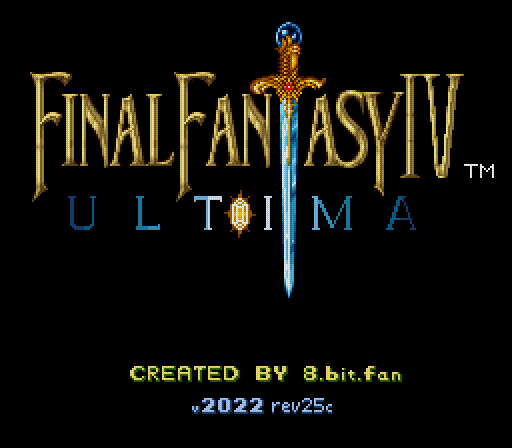

Please upload a copy of 'Final Fantasy II (USA)' or 'FF IV(J)'.
This app can patch it into Final Fantasy IV Ultima Classic (rev25c).
This tool & patches current as of 9 Jan 2025.

If you need a copy of FF4 Ultima Plus,
use the
Why play FF4 Ultima Classic vs Ultima Plus?
The reason we hear most often is that people want this version's RetroAchievements support,
and Ultima Plus doesn't offer it yet!
CRC32:
ROM:
The rom checksums (CRC32s) that work at this time are: 23084fcd, 65d0a825,
6cda700c, caa15e97, e73564db, a1ed8333,
ee3fbcf2, 48449269
 Powered by Rom Patcher JS
Powered by Rom Patcher JS